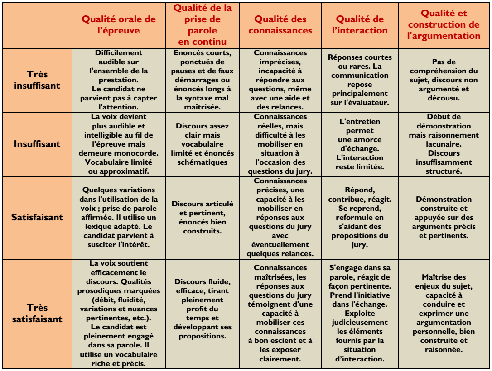

Grand Oral
Présentation
Présentation du Grand Oral par le ministère (Eduscol)
Texte du Bulletin Officiel définissant l'épreuve du Grand Oral
Grille d'évaluation

Ressources
Chaine Youtube Sciences étonnantes
Dossier documentaire Concours SESAME 2019
Sitographie par thème
Comment l'IA a-t-elle pu permettre de battre les champions du monde d'échecs et du jeu de Go |
||
| lien n°1 | lien n°2 | lien n°3 |
De l'ordinateur au calcul, comment fonctionne l'ordinateur? |
||
| lien n°1 | lien n°2 | lien n°3 |
Le numérique menace-t-il l’emploi ? |
||
| lien n°1 | lien n°2 | lien n°3 |
comment l'informatique change l'entreprise? |
||
| lien n°1 | lien n°2 | lien n°3 |
L'informatique va-t-elle révolutionner la composition musicale ? |
||
| lien n°1 | lien n°2 | lien n°3 |
En quoi les jeux vidéos impactent la culture |
||
| lien n°1 | lien n°2 | lien n°3 |
Est ce que la cryptomonnaie est la monnaie du futur ? |
||
| lien n°1 | lien n°2 | lien n°3 |
Comment les nouvelles vies, enjeux et perspectives pour le traitement,l'enseignement, la promotion et la diffusion des langues en appui avec des moyens informatiques et numériques? |
||
| lien n°1 | lien n°2 | lien n°3 |
Des données enregistrées, analysées par la machine puis retranscrite pour l'homme ( vecteur vitesse avion ) |
||
| lien n°1 | lien n°2 | lien n°3 |
Qu'est ce que la crypto-monnaie? |
||
| lien n°1 | lien n°2 | lien n°3 |
Comment fonctionne la génération procédural d'un monde |
||
| lien n°1 | lien n°2 | lien n°3 |
Comment l'accessibilité grandissante aux moteurs de jeux a changée le visage du jeu-vidéo? |
||
| lien n°1 | lien n°2 | lien n°3 |
En quoi les mathématiques servent à l’informatique |
||
| lien n°1 | lien n°2 | lien n°3 |
Comment reproduire un environnement naturel (dans un univers cubique)? |
||
| lien n°1 | lien n°2 | lien n°3 |
Le numérique dans les relations sociales, un problème dans la société ? |
||
| lien n°1 | lien n°2 | lien n°3 |
Cyberguerre : la 3ème guerre mondiale ? |
||
| lien n°1 | lien n°2 | lien n°3 |
Comment peut on optimiser les ressources necessaire au fonctionnement d'un algorithme(complexité) |
||
| lien n°1 | lien n°2 | lien n°3 |
Tours de Hanoï : plus qu'un jeux d'enfant ? |
||
| lien n°1 | lien n°2 | lien n°3 |
Comment approximer la fonction exponentielle grace à la méthode d'euler? |
||
| lien n°1 | lien n°2 | lien n°3 |
Les systèmes de recommendation |
||
| lien n°1 | lien n°2 | lien n°3 |
Calculer des prévisions à l'aide de l'informatique |
||
| lien n°1 | lien n°2 | lien n°3 |
Notre vie privée est-elle menacée ? |
||
| lien n°1 | lien n°2 | lien n°3 |
Le numérique menace-t-il l’emploi ? |
||
| lien n°1 | lien n°2 | lien n°3 |
Deep Fakes, la fin de la preuve par image ? |
||
| lien n°1 | lien n°2 | lien n°3 |
peut on considerait que l'e-sport comme un sport |
||
| lien n°1 | lien n°2 | lien n°3 |
l'évolution de la cybersécurité : inquiétant ou rassurant ? |
||
| lien n°1 | lien n°2 | lien n°3 |
Comment l'informatique a t-elle impacté et révolutionner le secteur de la psychologie |
||
| lien n°1 | lien n°2 | lien n°3 |
L'assistance informatique au près des urgences ( 112 ) |
||
| lien n°1 | lien n°2 | lien n°3 |
Jusqu'où ira l'intelligence artificielle? |
||
| lien n°1 | lien n°2 | lien n°3 |
à quoi sert le machine learning / comment marche le machine learning |
||
| lien n°1 | lien n°2 | lien n°3 |
L'impact du numérique sur le cinéma |
||
| lien n°1 | lien n°2 | lien n°3 |
Comment l’intelligence artificielle lie-t-elle l’informatique et les mathématiques |
||
| lien n°1 | lien n°2 | lien n°3 |
Est-il possible de réellement sécuriser des données? |
||
| lien n°1 | lien n°2 | lien n°3 |
De quel manière le principe de recurrence est-il présent en informatique ? |
||
| lien n°1 | lien n°2 | lien n°3 |
Transformation d'images: Deep Fakes, une arme de désinformation massive ? / la fin de la preuve par l'image ? |
||
| lien n°1 | lien n°2 | lien n°3 |
Robots soldats : programmer le permis de tuer ? |
||
| lien n°1 | lien n°2 | lien n°3 |
Comment les ordinateurs jouent t-ils aux jeux? |
||
| lien n°1 | lien n°2 | lien n°3 |
Exemples de sujets
Le Livre scolaire - Sujet Maths / NSI
Capitaine Study - 10 exemples de questions
Thématiques et exemples de questions :
Au regard du texte, les questions doivent remplir quelques critères :
Elles sont suffisamment ouvertes pour permettre une mise en perspective et une prise de recul mais en s'appuyant sur des grands enjeux du programme :
- Histoire de l’informatique
- Structure de données
- Base de données
- Architectures matérielles, système d’exploitation et réseaux
- Langages et programmation
- Algorithmique
Elles doivent être singulières et personnelles en s’appuyant notamment sur le parcours avenir et les centres d’intérêt de l’élève.
Elles peuvent être transversales (s’appuyer sur les deux spécialités du candidat)
Elles peuvent porter sur les deux enseignements de spécialité du candidat et ainsi prendre appui sur une thématique transversale empruntée au monde contemporain :
- La santé (imagerie médicale, robotique, bio-informatique…)
- L’économie (crypto-monnaies,…)
- Le droit (informatique et liberté,…)
- L’art et la culture (art algorithmique, IA compositeur,…)
- L’environnement et le développement durable (Green computing,…)
- Les sciences (instrumentation, …)
- Les langues (traduction automatique, correcteur automatique,…)
- Le sport (e-sport,…)
- Les loisirs (jeux vidéos,…)
Liste non-exhaustive de domaines sur lesquels la question pourrait s’appuyer :
La communication de l’information :
- internet,
- sites web,
- réseaux sociaux,
Les données informatiques :
- Protection et sécurisation des données,
- Protection des libertés individuelles,
- Cybersécurité,
- Traitement des données,
- Analyse des données, Big Data,
- Les bugs,
- La cryptographie,
- Le stockage des données,
L'évolution de l’informatique :
- évolution matérielle,
- loi de Moore,
- évolution des langages,
- évolution de la robotique,
Les innovations dans le domaine de l'informatique :
- les ordinateurs quantiques,
- les super-calculateurs
- IoT,
- les smart-cities,
- la réalité virtuelle,
- les véhicules autonomes,
- l’intelligence artificielle,
- la domotique,
L’histoire de l’informatique:
- Femmes et numérique : quelle histoire ? quel avenir ?
- Ada Lovelace, pionnière du langage informatique
- Quelle est la différence entre le web 1.0 et le web 2.0 ?
- Alan Turing, et l’informatique fut
Langages et programmation :
- P = NP, un problème à un million de dollars ?
- Les fractales : informatique et mathématiques imitent-elles la nature?
- De la récurrence à la récursivité
- Les bugs : bête noire des développeurs ?
- Comment rendre l’informatique sûre ?
Données structurées et structures de données :
- L’informatisation des métros : progrès ou outil de surveillance ?
- Musique et informatique : une alliance possible de l’art et de la science ?
Algorithmique :
- Comment créer une machine intelligente ?
- Comment lutter contre les biais algorithmiques ?
- Quels sont les enjeux de la reconnaissance faciale (notamment éthiques) ?
- Quels sont les enjeux de l'intelligence artificielle ?
- Transformation d’images : Deep Fakes, une arme de désinformation massive ? La fin de la preuve par l’image ?
- Qu’apporte la récursivité dans un algorithme ?
- Quel est l’impact de la complexité d’un algorithme sur son efficacité ?
Bases de données :
- Données personnelles : la vie privé en voie d’extinction ?
- Comment optimiser les données ?
Architectures matérielles,
systèmes d’exploitation et réseaux :
- L’ordinateur quantique : nouvelle révolution informatique ?
- La course à l’infiniment petit : jusqu’où ?
- Peut-on vraiment sécuriser les communications ?
- Quelle est l’utilité des protocoles pour l’internet ?
- Cyberguerre : la 3ème guerre mondiale ?
Interfaces Hommes-Machines (IHM) :
- Smart cities, smart control ?
- La réalité virtuelle : un nouveau monde ?
- La voiture autonome, quels enjeux ?
Impact sociétal et éthique de l’informatique :
- Comment protéger les données numériques sur les réseaux sociaux ?
- Quelle est l’empreinte carbone du numérique en termes de consommation?
- Pourquoi chiffrer ses communications ?
- Les réseaux sociaux sont-ils compatibles avec la politique ?
- Les réseaux sociaux sont-ils compatibles avec le journalisme ?
- Les réseaux sociaux permettent-ils de lutter contre les infox ?
- L’informatique va-t-elle révolutionner le dessin animé ?
- L’informatique va-t-elle révolutionner la composition musicale ?
- L’informatique va-t-elle révolutionner l’art ?
- L’informatique va-t-elle révolutionner le cinéma ?
- L’informatique va-t-elle révolutionner la médecine ?
- L’informatique va-t-elle révolutionner la physique ?
- L’informatique va-t-elle révolutionner l’entreprise ?
- Le numérique : facteur de démocratisation ou de fractures sociales ?
- Informatique : quel impact sur le climat ?